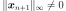
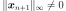

Pagmo¶
- class Pagmo(*args)¶
Pagmo algorithms.
This class exposes bio-inspired and evolutionary global optimization algorithms from the Pagmo library. These algorithms start from an initial population and make it evolve to obtain a final population after a defined number of generations (by
setGenerationNumber()). A few of these algorithms allow for multi-objective optimization, and in that case the result is not the best point among the final population but a set of dominant points: a pareto front.- Parameters
- problem
OptimizationProblem Optimization problem to solve
- algoNamestr, default=’gaco’
Identifier of the optimization method to use.
- startingSample2-d sequence of float, optional
Initial population
- problem
Notes
Starting points provided through the startingSample parameter should be within the bounds of the
OptimizationProblem, but this is not enforced.Pagmo provides the following global heuristics:
Algorithm
Description
Multi-objective
MINLP
Batch
gaco
Extended Ant Colony Optimization
no
yes
yes
de
Differential Evolution
no
no
no
sade
Self-adaptive DE (jDE and iDE)
no
no
no
de1220
Self-adaptive DE (de_1220 aka pDE)
no
no
no
gwo
Grey wolf optimizer
no
no
no
ihs
Improved Harmony Search
no
yes
no
pso
Particle Swarm Optimization
no
no
no
pso_gen
Particle Swarm Optimization Generational
no
no
yes
sea
(N+1)-ES Simple Evolutionary Algorithm
no
no
no
sga
Simple Genetic Algorithm
no
yes
no
simulated_annealing
Corana’s Simulated Annealing
no
no
no
bee_colony
Artificial Bee Colony
no
no
no
cmaes
Covariance Matrix Adaptation Evo. Strategy
no
no
no
xnes
Exponential Evolution Strategies
no
no
no
nsga2
Non-dominated Sorting GA
yes
yes
yes
moead
Multi-objective EA vith Decomposition
yes
no
no
mhaco
Multi-objective Hypervolume-based ACO
yes
yes
yes
nspso
Non-dominated Sorting PSO
yes
no
yes
Only gaco and ihs natively support constraints, but for the other algorithms constraints are emulated through penalization. Some algorithms support batch evaluation, except when constraints are emulated, see
setBlockSize(). Default parameters are available in theResourceMapfor each algorithm, refer to the correspondings keys in the Pagmo documentation.Examples
Define an optimization problem to find the minimum of the Rosenbrock function:
>>> import openturns as ot >>> dim = 2 >>> rosenbrock = ot.SymbolicFunction(['x1', 'x2'], ['(1-x1)^2+100*(x2-x1^2)^2']) >>> bounds = ot.Interval([-5.0] * dim, [5.0] * dim) >>> problem = ot.OptimizationProblem(rosenbrock) >>> problem.setBounds(bounds)
Sample the initial population inside a box:
>>> uniform = ot.ComposedDistribution([ot.Uniform(-2.0, 2.0)] * dim) >>> ot.RandomGenerator.SetSeed(0) >>> init_pop = uniform.getSample(5)
Run GACO on our problem:
>>> algo = ot.Pagmo(problem, 'gaco', init_pop) >>> algo.setGenerationNumber(5) >>> algo.run() >>> result = algo.getResult() >>> x_star = result.getOptimalPoint() >>> y_star = result.getOptimalValue()
Get the final population:
>>> final_pop_x = result.getFinalPoints() >>> final_pop_y = result.getFinalValues()
Define a multi-objective problem:
>>> dim = 2 >>> model = ot.SymbolicFunction(['x', 'y'], ['x^2+y^2*(1-x)^3', '-x^2']) >>> bounds = ot.Interval([-2.0] * dim, [3.0] * dim) >>> problem = ot.OptimizationProblem(model) >>> problem.setBounds(bounds)
Sample the initial population inside a box:
>>> uniform = ot.ComposedDistribution([ot.Uniform(-2.0, 3.0)] * dim) >>> ot.RandomGenerator.SetSeed(0) >>> init_pop = uniform.getSample(5)
Run NSGA2 on our problem:
>>> algo = ot.Pagmo(problem, 'nsga2', init_pop) >>> algo.setGenerationNumber(5) >>> algo.run() >>> result = algo.getResult() >>> final_pop_x = result.getFinalPoints() >>> final_pop_y = result.getFinalValues()
Get the best front points and values:
>>> front0 = result.getParetoFrontsIndices()[0] >>> front0_x = final_pop_x.select(front0) >>> front0_y = final_pop_y.select(front0)
Methods
Accessor to the list of algorithm names provided.
Accessor to the algorithm name.
Block size accessor.
Accessor to the object's name.
Generation number accessor.
getId()Accessor to the object's id.
Accessor to maximum allowed absolute error.
Accessor to maximum allowed constraint error.
Accessor to maximum allowed number of evaluations.
Accessor to maximum allowed number of iterations.
Accessor to maximum allowed relative error.
Accessor to maximum allowed residual error.
getName()Accessor to the object's name.
Accessor to optimization problem.
Accessor to optimization result.
getSeed()Random generator seed accessor.
Accessor to the object's shadowed id.
Accessor to starting point.
Accessor to the sample of starting points.
Accessor to the verbosity flag.
Accessor to the object's visibility state.
hasName()Test if the object is named.
Test if the object has a distinguishable name.
run()Launch the optimization.
setAlgorithmName(algoName)Accessor to the algorithm name.
setBlockSize(blockSize)Block size accessor.
setGenerationNumber(generationNumber)Generation number accessor.
setMaximumAbsoluteError(maximumAbsoluteError)Accessor to maximum allowed absolute error.
setMaximumConstraintError(maximumConstraintError)Accessor to maximum allowed constraint error.
Accessor to maximum allowed number of evaluations.
setMaximumIterationNumber(maximumIterationNumber)Accessor to maximum allowed number of iterations.
setMaximumRelativeError(maximumRelativeError)Accessor to maximum allowed relative error.
setMaximumResidualError(maximumResidualError)Accessor to maximum allowed residual error.
setName(name)Accessor to the object's name.
setProblem(problem)Accessor to optimization problem.
setProgressCallback(*args)Set up a progress callback.
setResult(result)Accessor to optimization result.
setSeed(seed)Random generator seed accessor.
setShadowedId(id)Accessor to the object's shadowed id.
setStartingPoint(point)Accessor to starting point.
setStartingSample(startingSample)Accessor to the sample of starting points.
setStopCallback(*args)Set up a stop callback.
setVerbose(verbose)Accessor to the verbosity flag.
setVisibility(visible)Accessor to the object's visibility state.
- __init__(*args)¶
- static GetAlgorithmNames()¶
Accessor to the list of algorithm names provided.
- Returns
- names
Description List of algorithm names provided, according to its naming convention.
- names
- getAlgorithmName()¶
Accessor to the algorithm name.
- Returns
- algoNamestr
The identifier of the algorithm.
- getBlockSize()¶
Block size accessor.
- Returns
- blockSizeint
Batch evaluation granularity.
- getClassName()¶
Accessor to the object’s name.
- Returns
- class_namestr
The object class name (object.__class__.__name__).
- getGenerationNumber()¶
Generation number accessor.
- Returns
- genint
Number of generations to evolve.
- getId()¶
Accessor to the object’s id.
- Returns
- idint
Internal unique identifier.
- getMaximumAbsoluteError()¶
Accessor to maximum allowed absolute error.
- Returns
- maximumAbsoluteErrorfloat
Maximum allowed absolute error, where the absolute error is defined by
 where
where  and
and  are two consecutive approximations of the optimum.
are two consecutive approximations of the optimum.
- getMaximumConstraintError()¶
Accessor to maximum allowed constraint error.
- Returns
- maximumConstraintErrorfloat
Maximum allowed constraint error, where the constraint error is defined by
 where is the current approximation of the optimum and
where is the current approximation of the optimum and  is the function that gathers all the equality and inequality constraints (violated values only)
is the function that gathers all the equality and inequality constraints (violated values only)
- getMaximumEvaluationNumber()¶
Accessor to maximum allowed number of evaluations.
- Returns
- Nint
Maximum allowed number of evaluations.
- getMaximumIterationNumber()¶
Accessor to maximum allowed number of iterations.
- Returns
- Nint
Maximum allowed number of iterations.
- getMaximumRelativeError()¶
Accessor to maximum allowed relative error.
- Returns
- maximumRelativeErrorfloat
Maximum allowed relative error, where the relative error is defined by
 if , else
if , else  .
.
- getMaximumResidualError()¶
Accessor to maximum allowed residual error.
- Returns
- maximumResidualErrorfloat
Maximum allowed residual error, where the residual error is defined by
 if
if  , else .
, else .
- getName()¶
Accessor to the object’s name.
- Returns
- namestr
The name of the object.
- getProblem()¶
Accessor to optimization problem.
- Returns
- problem
OptimizationProblem Optimization problem.
- problem
- getResult()¶
Accessor to optimization result.
- Returns
- result
OptimizationResult Result class.
- result
- getSeed()¶
Random generator seed accessor.
- Returns
- seedint
Seed.
- getShadowedId()¶
Accessor to the object’s shadowed id.
- Returns
- idint
Internal unique identifier.
- getStartingSample()¶
Accessor to the sample of starting points.
- Returns
- startingSample
Sample The initial population.
- startingSample
- getVerbose()¶
Accessor to the verbosity flag.
- Returns
- verbosebool
Verbosity flag state.
- getVisibility()¶
Accessor to the object’s visibility state.
- Returns
- visiblebool
Visibility flag.
- hasName()¶
Test if the object is named.
- Returns
- hasNamebool
True if the name is not empty.
- hasVisibleName()¶
Test if the object has a distinguishable name.
- Returns
- hasVisibleNamebool
True if the name is not empty and not the default one.
- run()¶
Launch the optimization.
- setAlgorithmName(algoName)¶
Accessor to the algorithm name.
- Parameters
- algoNamestr
The identifier of the algorithm.
- setBlockSize(blockSize)¶
Block size accessor.
- Parameters
- blockSizeint
Batch evaluation granularity.
- setGenerationNumber(generationNumber)¶
Generation number accessor.
- Parameters
- genint
Number of generations to evolve. Ignored for the simulated_annealing algorithm.
- setMaximumAbsoluteError(maximumAbsoluteError)¶
Accessor to maximum allowed absolute error.
- Parameters
- maximumAbsoluteErrorfloat
Maximum allowed absolute error, where the absolute error is defined by
where
and are two consecutive approximations of the optimum.
- setMaximumConstraintError(maximumConstraintError)¶
Accessor to maximum allowed constraint error.
- Parameters
- maximumConstraintErrorfloat
Maximum allowed constraint error, where the constraint error is defined by
where is the current approximation of the optimum and is the function that gathers all the equality and inequality constraints (violated values only)
- setMaximumEvaluationNumber(maximumEvaluationNumber)¶
Accessor to maximum allowed number of evaluations.
- Parameters
- Nint
Maximum allowed number of evaluations.
- setMaximumIterationNumber(maximumIterationNumber)¶
Accessor to maximum allowed number of iterations.
- Parameters
- Nint
Maximum allowed number of iterations.
- setMaximumRelativeError(maximumRelativeError)¶
Accessor to maximum allowed relative error.
- Parameters
- maximumRelativeErrorfloat
Maximum allowed relative error, where the relative error is defined by
if , else .
- setMaximumResidualError(maximumResidualError)¶
Accessor to maximum allowed residual error.
- Parameters
- Maximum allowed residual error, where the residual error is defined by
-
if , else .
- setName(name)¶
Accessor to the object’s name.
- Parameters
- namestr
The name of the object.
- setProblem(problem)¶
Accessor to optimization problem.
- Parameters
- problem
OptimizationProblem Optimization problem.
- problem
- setProgressCallback(*args)¶
Set up a progress callback.
Can be used to programmatically report the progress of an optimization.
- Parameters
- callbackcallable
Takes a float as argument as percentage of progress.
Examples
>>> import sys >>> import openturns as ot >>> rosenbrock = ot.SymbolicFunction(['x1', 'x2'], ['(1-x1)^2+100*(x2-x1^2)^2']) >>> problem = ot.OptimizationProblem(rosenbrock) >>> solver = ot.OptimizationAlgorithm(problem) >>> solver.setStartingPoint([0, 0]) >>> solver.setMaximumResidualError(1.e-3) >>> solver.setMaximumEvaluationNumber(10000) >>> def report_progress(progress): ... sys.stderr.write('-- progress=' + str(progress) + '%\n') >>> solver.setProgressCallback(report_progress) >>> solver.run()
- setResult(result)¶
Accessor to optimization result.
- Parameters
- result
OptimizationResult Result class.
- result
- setSeed(seed)¶
Random generator seed accessor.
- Parameters
- seedint
Seed.
- setShadowedId(id)¶
Accessor to the object’s shadowed id.
- Parameters
- idint
Internal unique identifier.
- setStartingSample(startingSample)¶
Accessor to the sample of starting points.
- Parameters
- startingSample2-d sequence of float
The initial population.
- setStopCallback(*args)¶
Set up a stop callback.
Can be used to programmatically stop an optimization.
- Parameters
- callbackcallable
Returns an int deciding whether to stop or continue.
Examples
>>> import openturns as ot >>> rosenbrock = ot.SymbolicFunction(['x1', 'x2'], ['(1-x1)^2+100*(x2-x1^2)^2']) >>> problem = ot.OptimizationProblem(rosenbrock) >>> solver = ot.OptimizationAlgorithm(problem) >>> solver.setStartingPoint([0, 0]) >>> solver.setMaximumResidualError(1.e-3) >>> solver.setMaximumEvaluationNumber(10000) >>> def ask_stop(): ... return True >>> solver.setStopCallback(ask_stop) >>> solver.run()
- setVerbose(verbose)¶
Accessor to the verbosity flag.
- Parameters
- verbosebool
Verbosity flag state.
- setVisibility(visible)¶
Accessor to the object’s visibility state.
- Parameters
- visiblebool
Visibility flag.